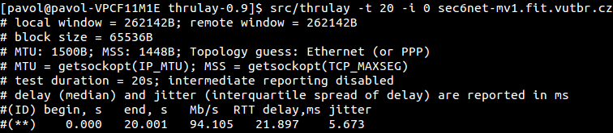
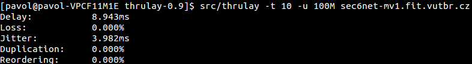

Thrulay
Tento projekt bol pôvodne zalo¾ený Stanislavom Shanulov, ktorý implementoval jeho pôvodnú verziu. Neskôr sa vývoja ujala organizácia Internet2, ku ktorej sa pridal aj pôvodný autor. Druhou vývojovou vetvou je nástroj Thrulay-ng, ktorý vznikol za podpory projektu Google Summer of Code. Oba tieto projekty sú úzko zviazané a podporované organizáciou Internet2 pod vedením Jeff W. Boote. Ako sme uviedli, nástroje sú si veµmi podobné a poskytujú takmer také isté mo¾nosti testovania. Jediný markantný rozdiel je, ¾e nástroj od organizácie Internet2 poskytuje pri UDP testovaní informácie o oneskorení a rozptyle oneskorenia. Pre na¹e úèely sme vybrali verziu od organizácia Internet2.Zdroje a základne spustenie
Domovská stránkaManuál
Link na stiahnutie - Pou¾itá verzia 0.9
Architektúra klient-server, thrulay, thrulayd.
Príklad základného spustenia klienta a servera:
$ thrulay <adresa>
$ thrulayd -d
Uká¾ka testov
Test TCP priepustnosti,
-i 0 vypne periodické výpisy.
$ thrulay -t 20 -i 0 adresa

Test UDP priepustnosti do hodnoty 100 Mbps.
$ thrulay -t 10 -u 100M adresa

Nekorektné správanie
Neschopnos» naviaza» spojenie pomocou sie»ového protokolu IPv6.
Vybrané prepínaèe
| Parameter | Popis |
|---|---|
| Prepínaèe pre thrulay | |
-p <èíslo> |
èíslo portu, na ktorom poèúva server |
-t <èíslo> |
då¾ka trvania testu (implicitne 60 s) |
-u <èíslo>[kMGT] |
UDP test s ¹pecifikovanou priepustnos»ou v bitoch za sekundu, (k znamená 1000, M 105) |
-m <èíslo> |
poèet TCP tokov (implicitne 1) |
-i <èíslo> |
interval výpisov, ak sa zadá 0 vypí¹e len výsledok (implicitne 1 s) |
| Prepínaèe pre thrulayd | |
-p <èíslo> |
urèí prijímajúci port (implicitne 5003) |
-a <adresa/maska> |
prijme spojenia iba z uvedenej adresy |
-d |
program sa spustí na popredí a bude vypisova» informácie o testoch na ¹tandardný výstup |